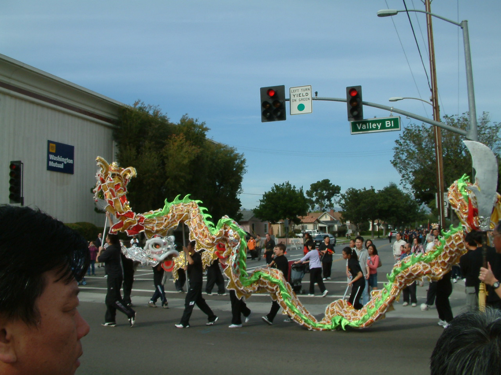
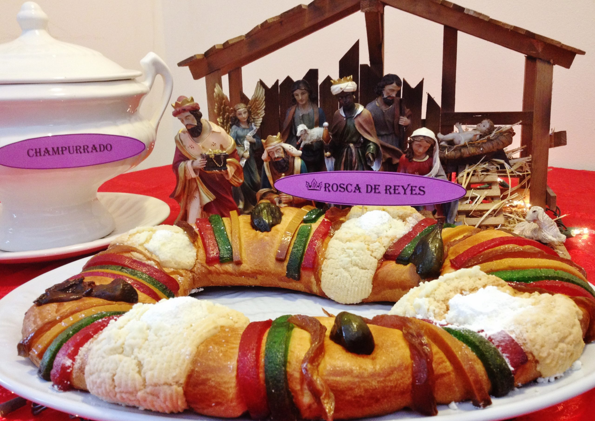

Chinese New Year
Photo by Yin, DanaChinese New Year (also called Lunar New Year and celebrated in many countries outside China), starts on the second new moon after the winter solstice. The exact date varies from year to year, but it always falls during the winter. In China, the holiday lasts for weeks! Celebrations for Chinese New Year take all kinds of forms, from enormous public fireworks displays and exciting lion dances to special family dinners at home and giving children money in red envelopes for good luck. This vibrant, thriving holiday with ancient roots brings warmth and cheer to winter every year!
Three Kings' Day
On January 6, Three Kings’ Day is celebrated in much of the Spanish-speaking world, marking the occasion when three wise men visited the baby Jesus on the twelfth day of Christmas, bringing gifts of gold, frankincense and myrrh. In Spain, Dia de los Reyes, as it’s known, is all about massive parades and roscon de reyes, a sweet, ring-shaped pastry meant to resemble a king’s crown. The pastry traditionally contains a small plastic figure, granting the finder royal status for the day. The pastry also conceals a bean, burdening the finder with the task of buying next year’s cake.
Lucky Spider Webs

Would you feel lucky if you found a spider web on your Christmas tree? Probably not. But Ukrainians associate spider webs with good fortune because of an ancient story. In the tale, a poor family grew a Christmas tree from a pine cone. The children were excited to decorate it, but the family couldn’t afford any decorations. Sensing the family’s despair, spiders spun glistening silk webs around the tree, which turned to silver and gold when the sun rose in the morning, leaving the family with a beautifully adorned tree. To this day, Ukrainian families decorate their trees with spider webs for good luck.